#1 · 跌破
2026-10-03 02:55 台北 → 2026-10-03 04:55 台北
-49 USDT
進場 29.5700 停損 29.9400 目標 29.0150 出場 29.7200 時間到 -0.41R 極點 30.0000 頸線 29.6000 較低高點 29.9400 四小時高點 30.0000 張數 270 毛損益 -40.50 手續費 8.00 淨損益 -48.50 USDT
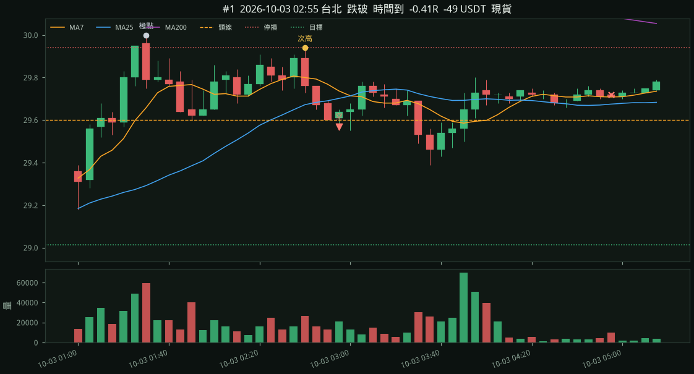
2026-10-03 00:30 台北 → 2026-11-02 00:20 台北
5 分定極點、較低高點、頸線。1 分收盤跌破頸線、收在 MA25 下、量能回到前 10 根均量才放空。每筆風險預算 100 USDT。單邊費率 0.050%，進出各計一次。張數是整數。
毛損益 -48 USDT，手續費 1294，淨值最大回撤 -1830 USDT。
停利 9 筆 +13.5R · 停損 16 筆 -16.0R · 時間到 16 筆 +2.0R
現貨時段 6 筆、勝率 50%、-94 USDT。休市 35 筆、勝率 46%、-1247 USDT。


進場 29.5700 停損 29.9400 目標 29.0150 出場 29.7200 時間到 -0.41R 極點 30.0000 頸線 29.6000 較低高點 29.9400 四小時高點 30.0000 張數 270 毛損益 -40.50 手續費 8.00 淨損益 -48.50 USDT

進場 29.4300 停損 29.6000 目標 29.1750 出場 29.5500 時間到 -0.71R 極點 29.8300 頸線 29.4400 較低高點 29.6000 四小時高點 29.6200 張數 588 毛損益 -70.56 手續費 17.34 淨損益 -87.90 USDT
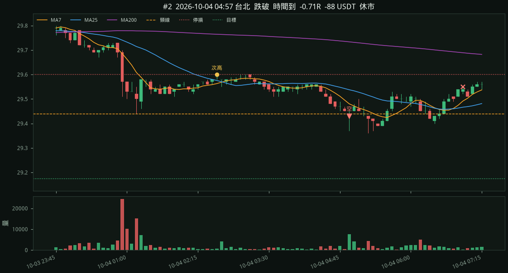
進場 30.1500 停損 30.5200 目標 29.5950 出場 30.5200 停損 -1.00R 極點 30.6000 頸線 30.3300 較低高點 30.5200 四小時高點 30.6000 張數 270 毛損益 -99.90 手續費 8.19 淨損益 -108.09 USDT
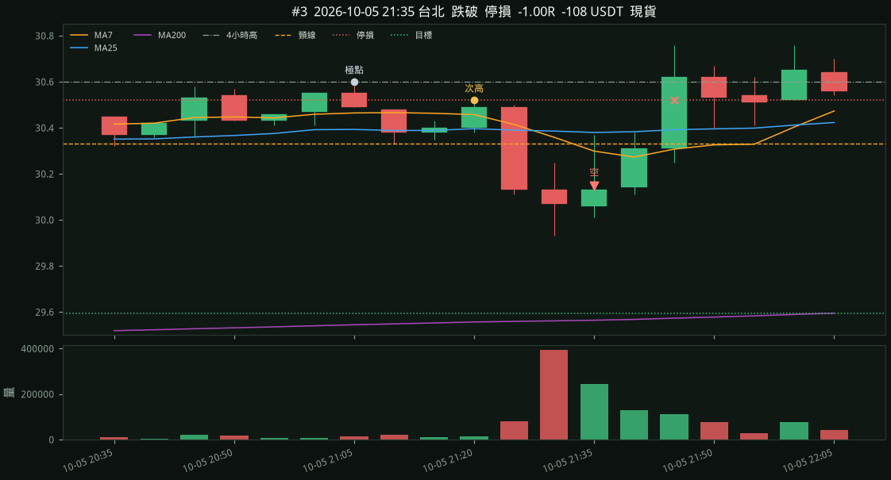
進場 29.6200 停損 29.8000 目標 29.3500 出場 29.5800 時間到 +0.22R 極點 30.0000 頸線 29.6500 較低高點 29.8000 四小時高點 30.1100 張數 555 毛損益 +22.20 手續費 16.43 淨損益 +5.77 USDT
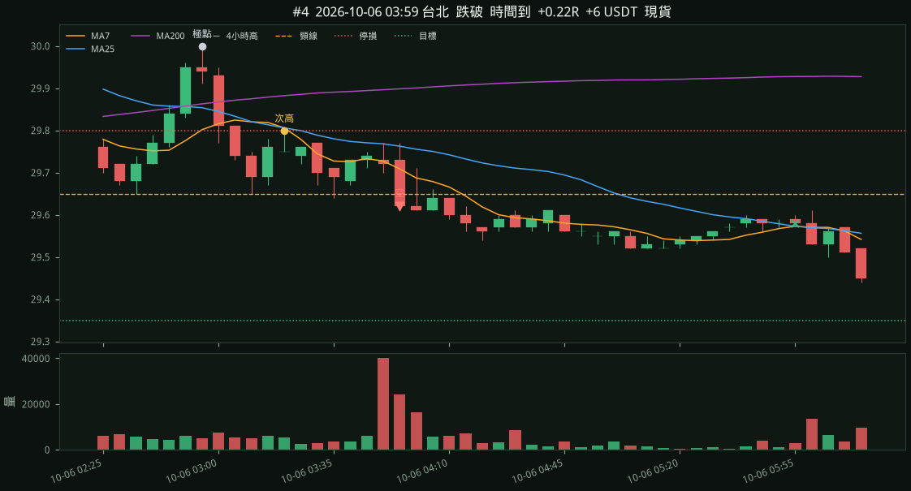
進場 29.5700 停損 29.6100 目標 29.5100 出場 29.6100 停損 -1.00R 極點 29.8300 頸線 29.5800 較低高點 29.7000 四小時高點 29.9000 張數 2500 毛損益 -100.00 手續費 73.97 淨損益 -173.97 USDT
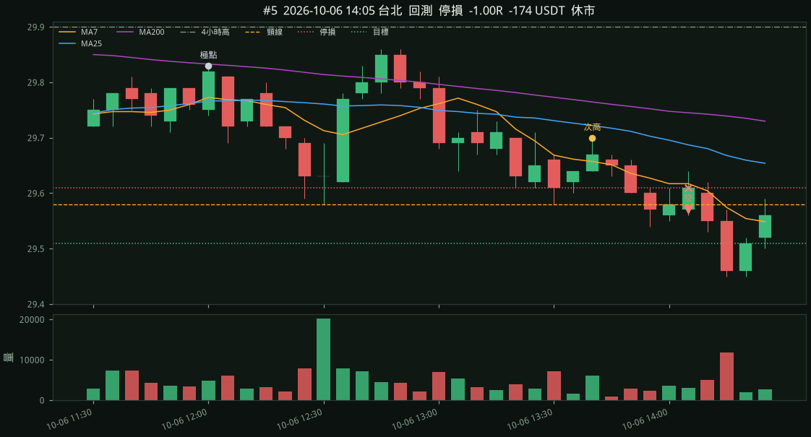
進場 29.4100 停損 29.5000 目標 29.2750 出場 29.2750 停利 +1.50R 極點 29.8500 頸線 29.4900 較低高點 29.7800 四小時高點 29.8500 張數 1111 毛損益 +149.99 手續費 32.60 淨損益 +117.39 USDT
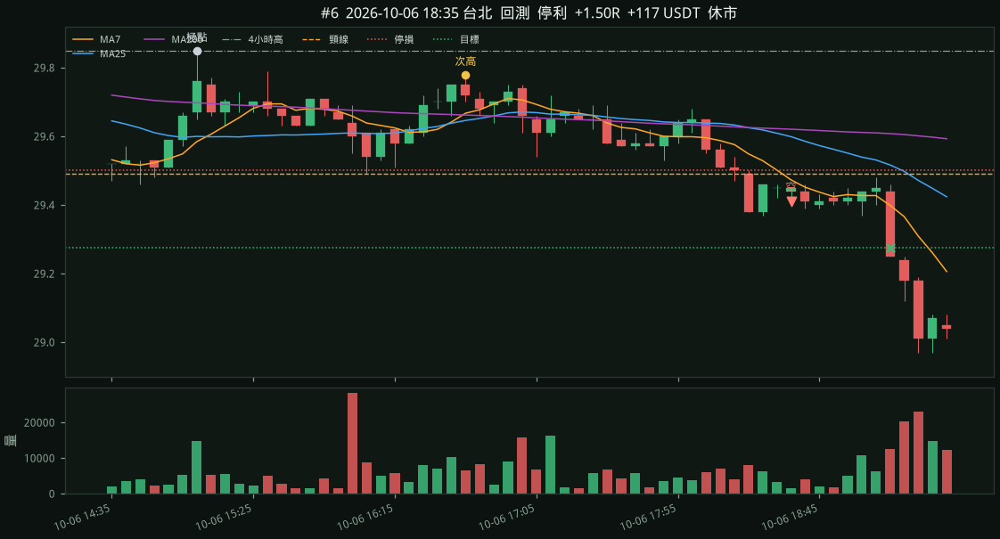
進場 29.4700 停損 29.6500 目標 29.2000 出場 29.6500 停損 -1.00R 極點 29.8000 頸線 29.5000 較低高點 29.6500 四小時高點 29.7100 張數 555 毛損益 -99.90 手續費 16.41 淨損益 -116.31 USDT
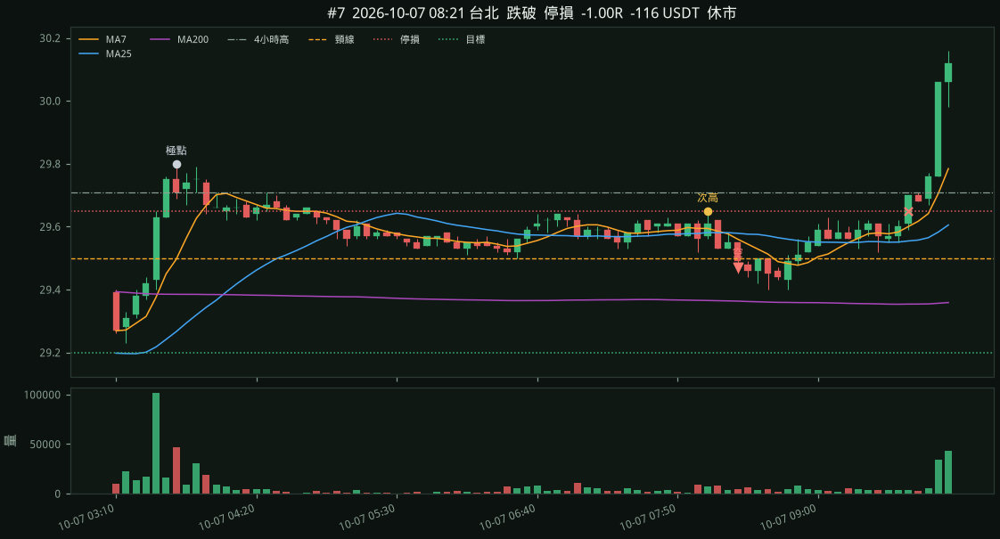
進場 29.8800 停損 30.0800 目標 29.5800 出場 29.8000 時間到 +0.40R 極點 30.2600 頸線 29.8900 較低高點 30.0800 四小時高點 30.2600 張數 500 毛損益 +40.00 手續費 14.92 淨損益 +25.08 USDT
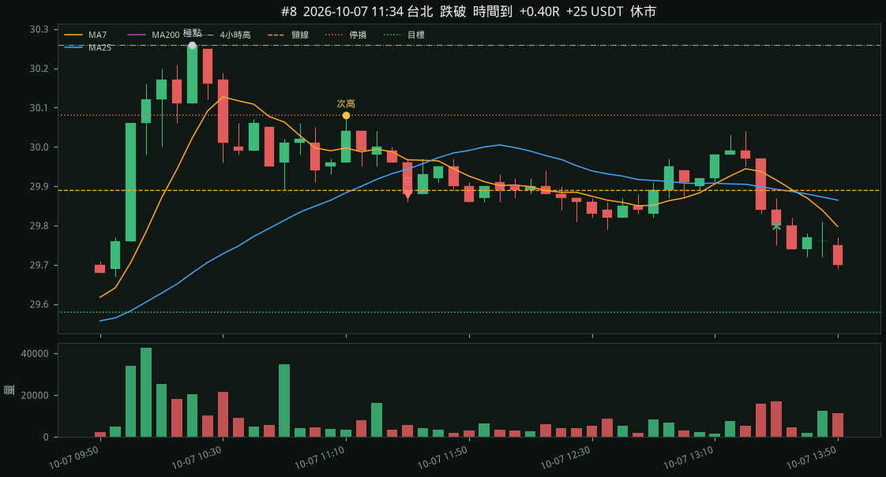
進場 31.3800 停損 31.5600 目標 31.1100 出場 31.5600 停損 -1.00R 極點 31.6600 頸線 31.3900 較低高點 31.5600 四小時高點 31.6600 張數 555 毛損益 -99.90 手續費 17.47 淨損益 -117.37 USDT
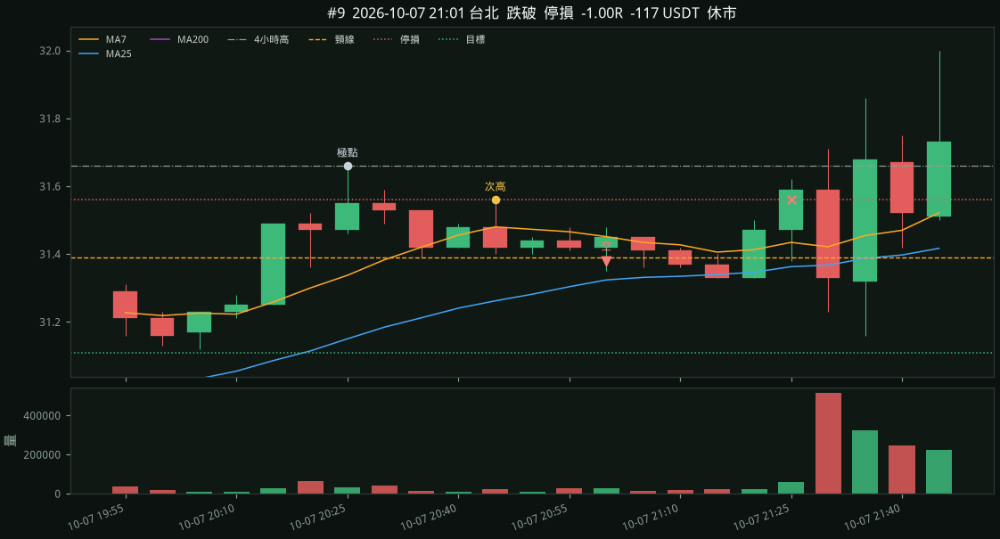
進場 30.6100 停損 30.8000 目標 30.3250 出場 30.8000 停損 -1.00R 極點 31.0700 頸線 30.6200 較低高點 30.8000 四小時高點 31.0700 張數 526 毛損益 -99.94 手續費 16.15 淨損益 -116.09 USDT
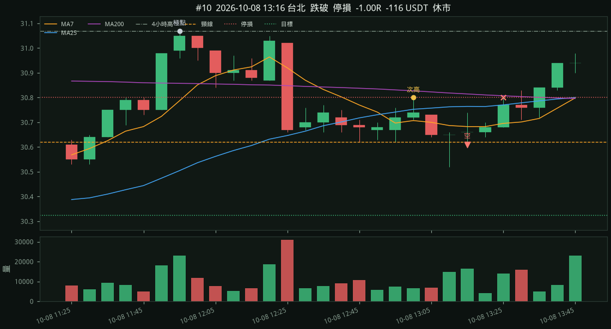
進場 32.2800 停損 32.6400 目標 31.7400 出場 32.6400 停損 -1.00R 極點 32.7200 頸線 32.2900 較低高點 32.6400 四小時高點 32.7200 張數 277 毛損益 -99.72 手續費 8.99 淨損益 -108.71 USDT
進場 33.5800 停損 33.6700 目標 33.4450 出場 33.6700 停損 -1.00R 極點 34.0100 頸線 33.6800 較低高點 33.9700 四小時高點 34.0100 張數 1111 毛損益 -99.99 手續費 37.36 淨損益 -137.35 USDT
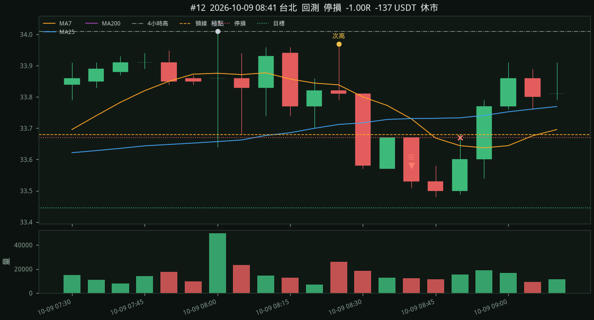
進場 34.5100 停損 34.9000 目標 33.9250 出場 34.3300 時間到 +0.46R 極點 34.9500 頸線 34.5300 較低高點 34.9000 四小時高點 34.9500 張數 256 毛損益 +46.08 手續費 8.81 淨損益 +37.27 USDT
進場 34.0300 停損 34.2300 目標 33.7300 出場 34.1700 時間到 -0.70R 極點 34.4000 頸線 34.1100 較低高點 34.2300 四小時高點 34.2300 張數 500 毛損益 -70.00 手續費 17.05 淨損益 -87.05 USDT
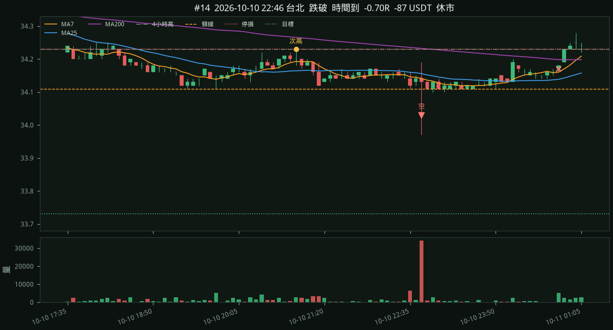
進場 33.9000 停損 34.0700 目標 33.6450 出場 33.8500 時間到 +0.29R 極點 34.4200 頸線 33.9100 較低高點 34.0700 四小時高點 34.4200 張數 588 毛損益 +29.40 手續費 19.92 淨損益 +9.48 USDT
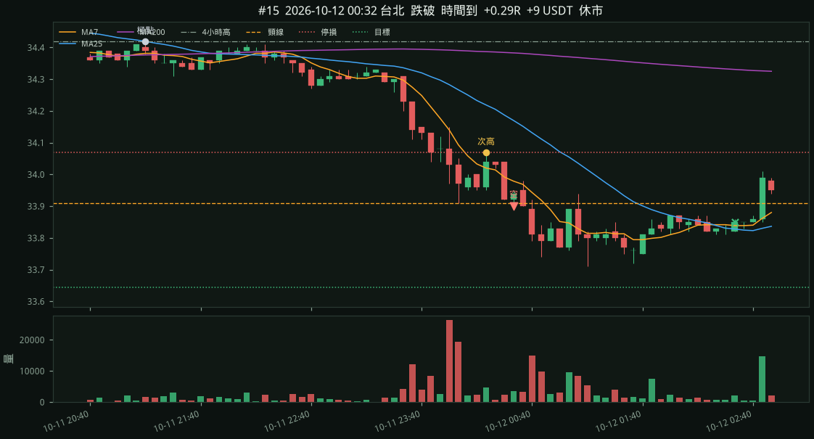
進場 33.9800 停損 34.0000 目標 33.9500 出場 34.0000 停損 -1.00R 極點 34.3400 頸線 34.0100 較低高點 34.1300 四小時高點 34.3400 張數 5000 毛損益 -100.00 手續費 169.95 淨損益 -269.95 USDT
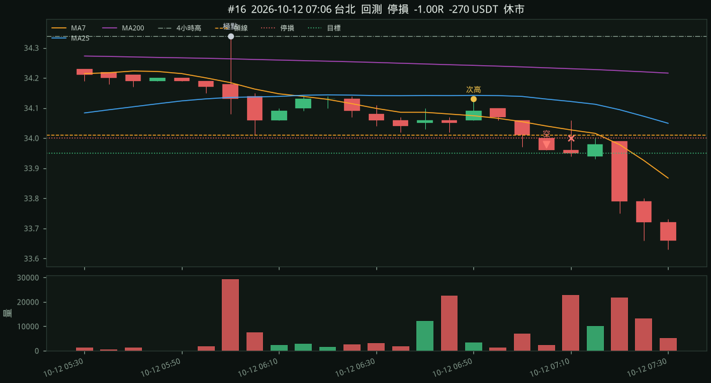
進場 39.3300 停損 39.7300 目標 38.7300 出場 38.7300 停利 +1.50R 極點 39.8700 頸線 39.4300 較低高點 39.7300 四小時高點 39.8700 張數 250 毛損益 +150.00 手續費 9.76 淨損益 +140.24 USDT
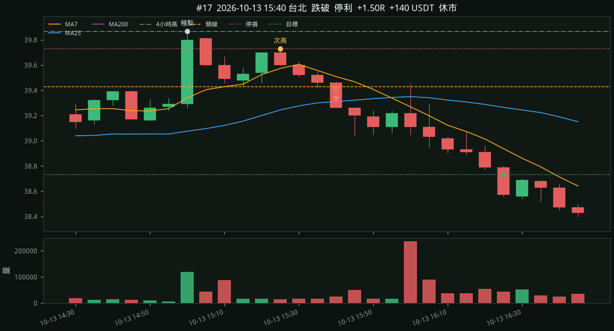
進場 39.3200 停損 39.6400 目標 38.8400 出場 39.6400 停損 -1.00R 極點 39.8700 頸線 39.3800 較低高點 39.6400 四小時高點 39.8700 張數 312 毛損益 -99.84 手續費 12.32 淨損益 -112.16 USDT
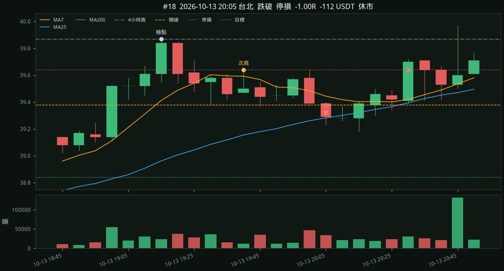
進場 37.9500 停損 38.3200 目標 37.3950 出場 38.3200 停損 -1.00R 極點 38.5100 頸線 38.0200 較低高點 38.3200 四小時高點 38.5100 張數 270 毛損益 -99.90 手續費 10.30 淨損益 -110.20 USDT
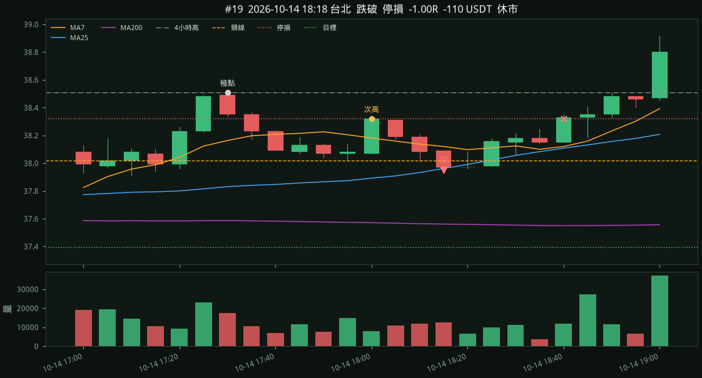
進場 38.4900 停損 38.7600 目標 38.0850 出場 38.0850 停利 +1.50R 極點 38.9200 頸線 38.5100 較低高點 38.7600 四小時高點 38.9200 張數 370 毛損益 +149.85 手續費 14.17 淨損益 +135.68 USDT
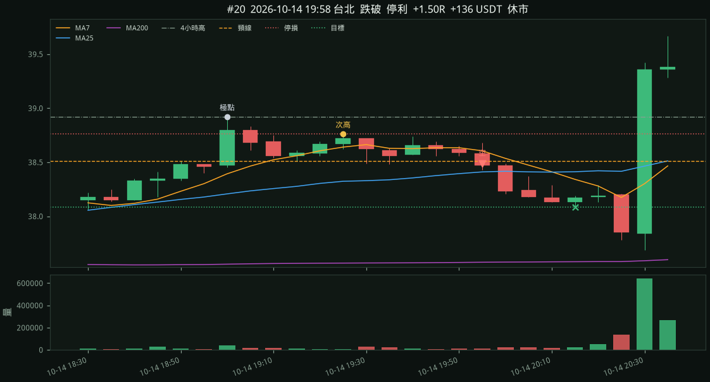
進場 39.9100 停損 40.5300 目標 38.9800 出場 40.5300 停損 -1.00R 極點 40.6300 頸線 39.9400 較低高點 40.5300 四小時高點 40.6300 張數 161 毛損益 -99.82 手續費 6.48 淨損益 -106.30 USDT
進場 44.8000 停損 44.8300 目標 44.7550 出場 44.8300 停損 -1.00R 極點 45.3200 頸線 44.8400 較低高點 45.1300 四小時高點 45.3200 張數 3333 毛損益 -99.99 手續費 149.37 淨損益 -249.36 USDT
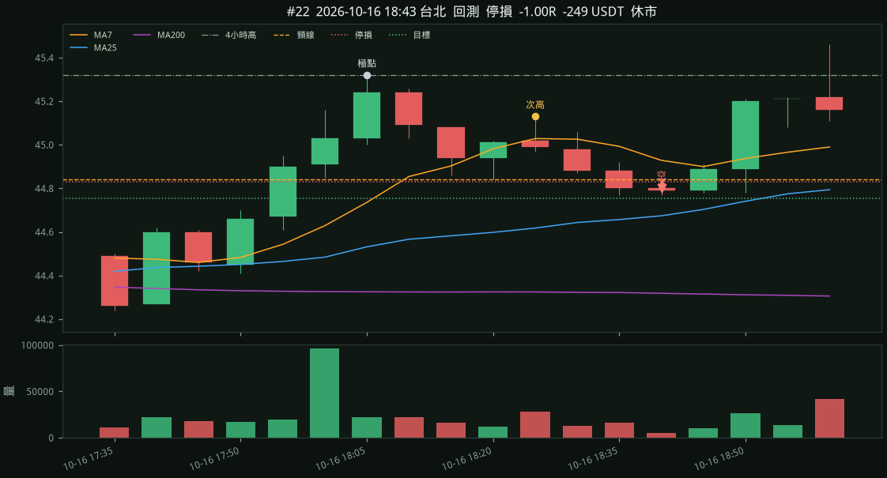
進場 50.4900 停損 50.9100 目標 49.8600 出場 50.4000 時間到 +0.21R 極點 51.0900 頸線 50.6100 較低高點 50.9100 四小時高點 51.0900 張數 238 毛損益 +21.42 手續費 12.01 淨損益 +9.41 USDT
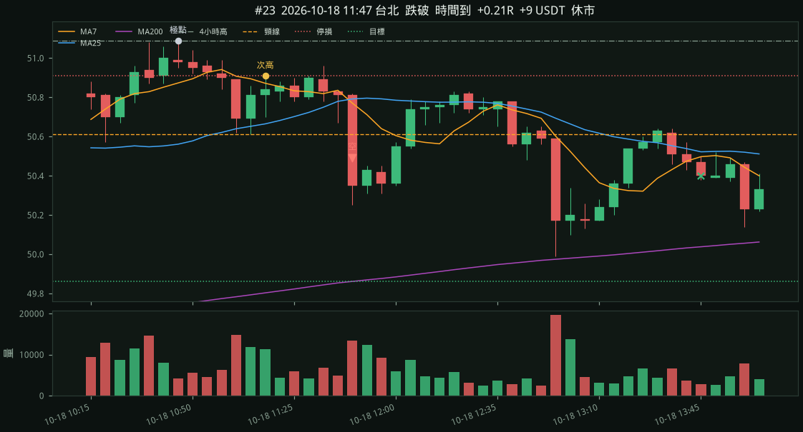
進場 50.0300 停損 50.0600 目標 49.9850 出場 50.0600 停損 -1.00R 極點 50.5900 頸線 50.0400 較低高點 50.2700 四小時高點 50.6400 張數 3333 毛損益 -99.99 手續費 166.80 淨損益 -266.79 USDT
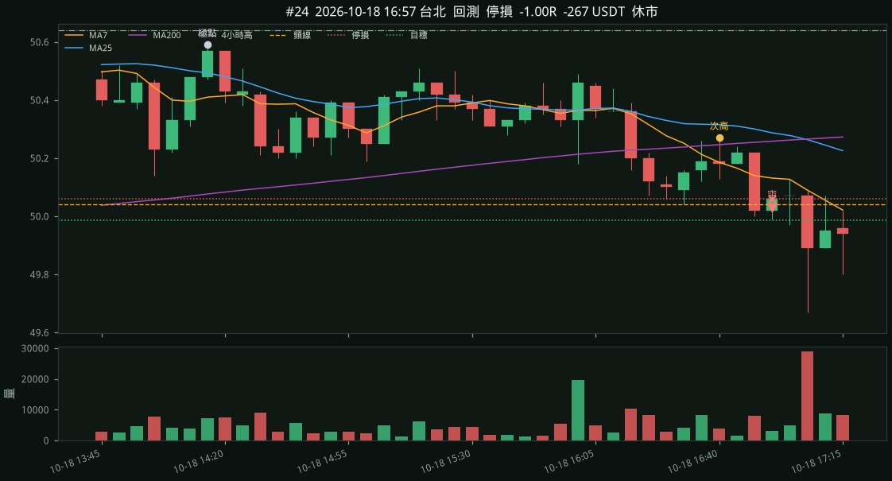
進場 51.7200 停損 52.0700 目標 51.1950 出場 52.0700 停損 -1.00R 極點 52.3300 頸線 51.8600 較低高點 52.0700 四小時高點 52.3300 張數 285 毛損益 -99.75 手續費 14.79 淨損益 -114.54 USDT
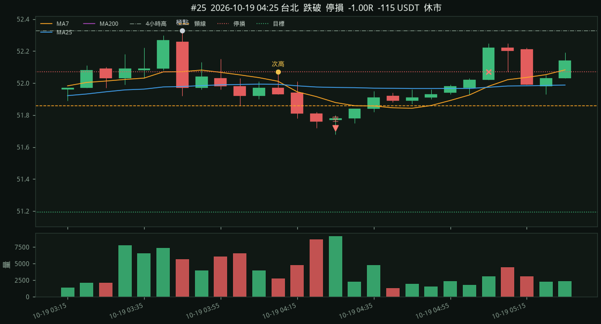
進場 45.1600 停損 45.4200 目標 44.7700 出場 44.7700 停利 +1.50R 極點 45.7700 頸線 45.1700 較低高點 45.4200 四小時高點 45.7700 張數 384 毛損益 +149.76 手續費 17.27 淨損益 +132.49 USDT
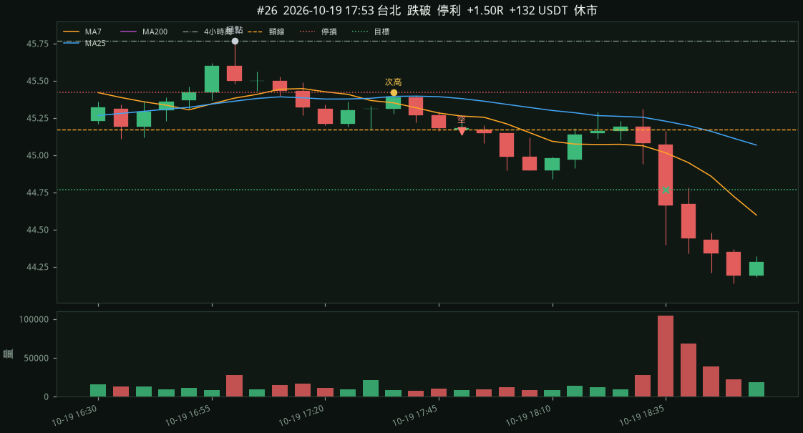
進場 48.3100 停損 48.3900 目標 48.1900 出場 48.3900 停損 -1.00R 極點 49.1900 頸線 48.3500 較低高點 48.8500 四小時高點 49.1900 張數 1250 毛損益 -100.00 手續費 60.44 淨損益 -160.44 USDT
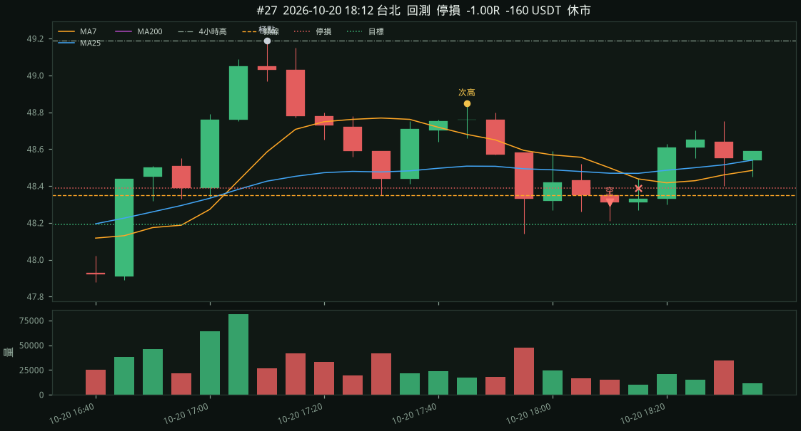
進場 52.3200 停損 52.7100 目標 51.7350 出場 51.7350 停利 +1.50R 極點 52.9100 頸線 52.3900 較低高點 52.7100 四小時高點 52.9100 張數 256 毛損益 +149.76 手續費 13.32 淨損益 +136.44 USDT
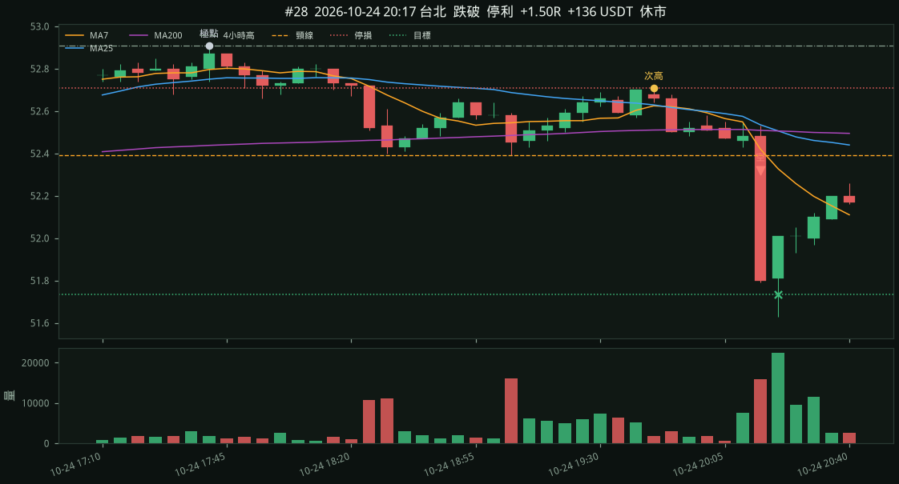
進場 51.4000 停損 51.7800 目標 50.8300 出場 51.6200 時間到 -0.58R 極點 51.9200 頸線 51.4100 較低高點 51.7800 四小時高點 51.9200 張數 263 毛損益 -57.86 手續費 13.55 淨損益 -71.41 USDT
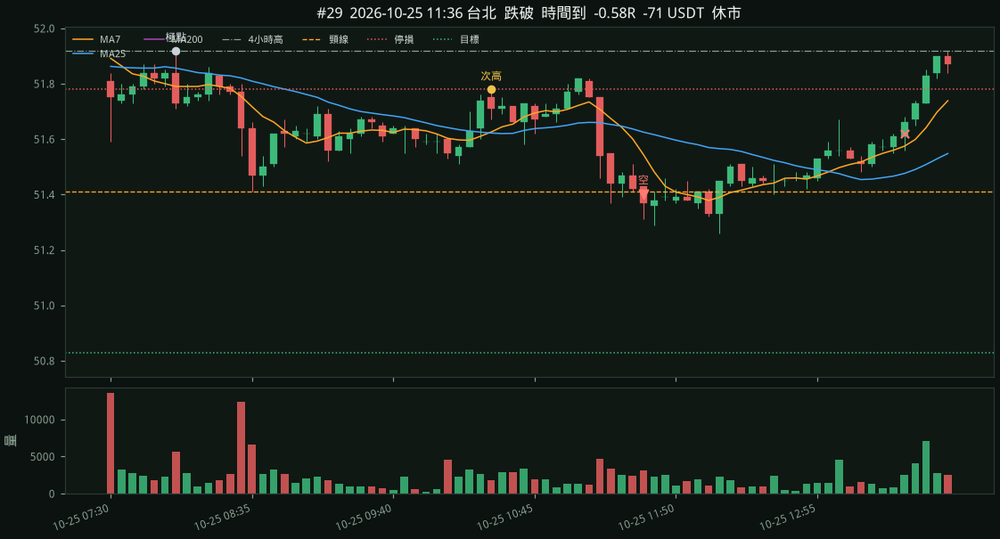
進場 52.1600 停損 52.4100 目標 51.7850 出場 52.0100 時間到 +0.60R 極點 52.6700 頸線 52.2100 較低高點 52.4100 四小時高點 52.6700 張數 400 毛損益 +60.00 手續費 20.83 淨損益 +39.17 USDT
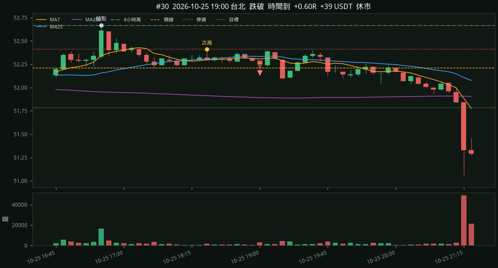
進場 51.3000 停損 51.6600 目標 50.7600 出場 51.1100 時間到 +0.53R 極點 51.7900 頸線 51.3300 較低高點 51.6600 四小時高點 52.0600 張數 277 毛損益 +52.63 手續費 14.18 淨損益 +38.45 USDT
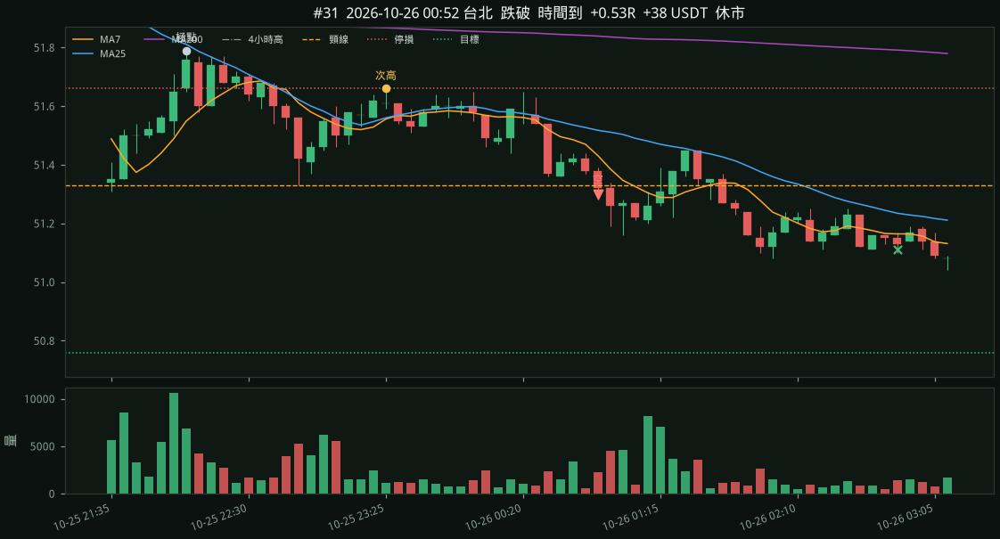
進場 52.6400 停損 53.5200 目標 51.3200 出場 52.6300 時間到 +0.01R 極點 53.6700 頸線 52.6700 較低高點 53.5200 四小時高點 53.6700 張數 113 毛損益 +1.13 手續費 5.95 淨損益 -4.82 USDT
進場 47.3900 停損 47.4500 目標 47.3000 出場 47.3000 停利 +1.50R 極點 48.2100 頸線 47.4200 較低高點 47.7600 四小時高點 48.2100 張數 1666 毛損益 +149.94 手續費 78.88 淨損益 +71.06 USDT
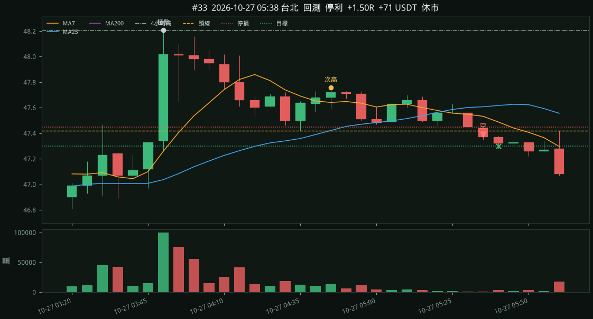
進場 49.1700 停損 49.5400 目標 48.6150 出場 48.6150 停利 +1.50R 極點 49.7700 頸線 49.3300 較低高點 49.5400 四小時高點 49.7700 張數 270 毛損益 +149.85 手續費 13.20 淨損益 +136.65 USDT
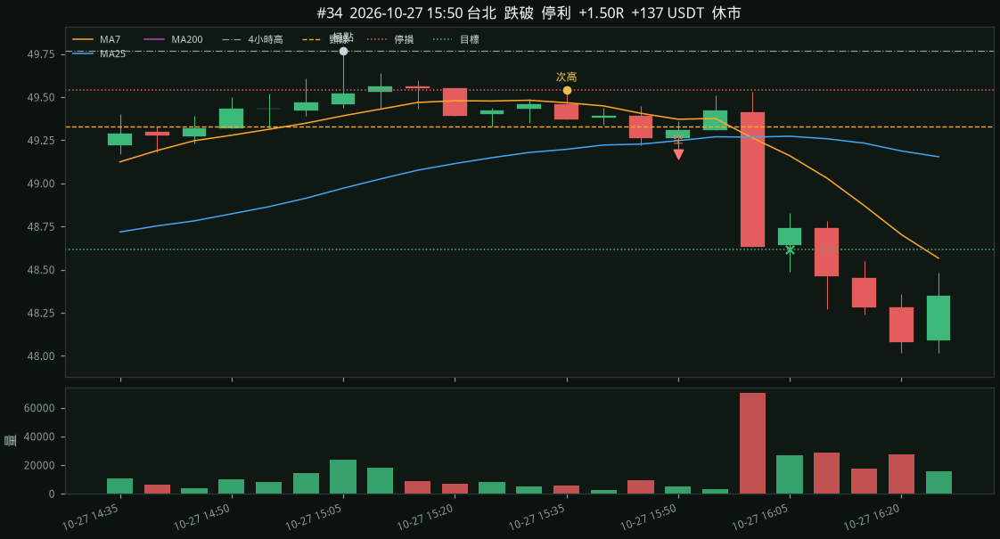
進場 41.3000 停損 41.8600 目標 40.4600 出場 41.4400 時間到 -0.25R 極點 42.0100 頸線 41.3500 較低高點 41.8600 四小時高點 42.0100 張數 178 毛損益 -24.92 手續費 7.36 淨損益 -32.28 USDT
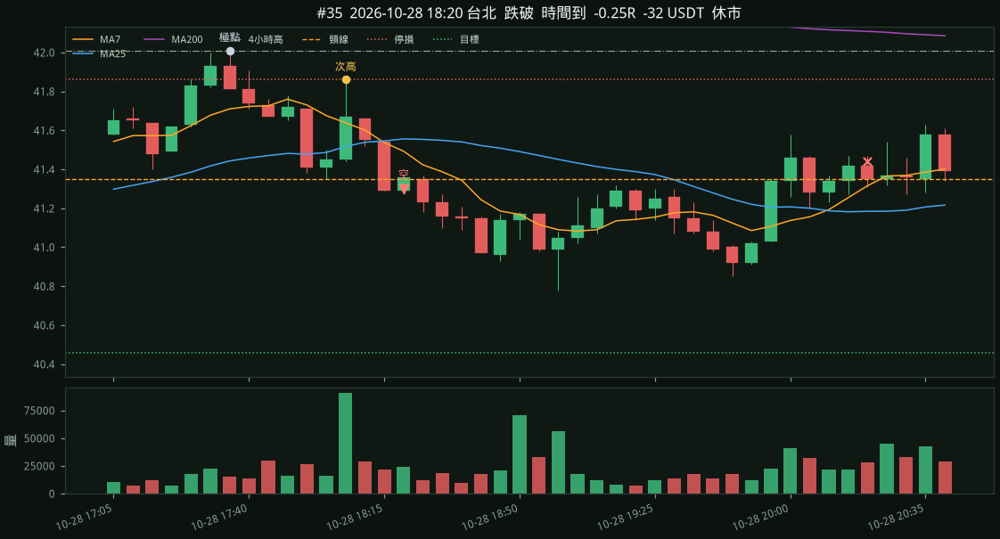
進場 43.4400 停損 43.9000 目標 42.7500 出場 42.7500 停利 +1.50R 極點 44.1900 頸線 43.4900 較低高點 43.9000 四小時高點 44.1900 張數 217 毛損益 +149.73 手續費 9.35 淨損益 +140.38 USDT
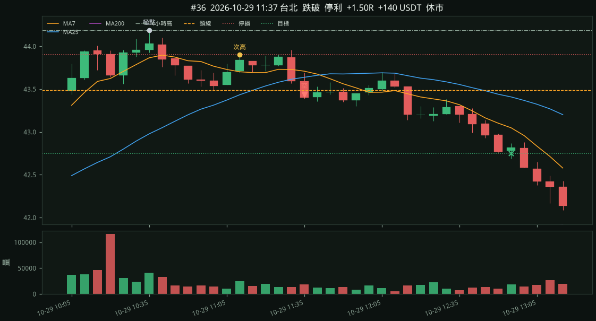
進場 48.8100 停損 49.4800 目標 47.8050 出場 48.1100 時間到 +1.04R 極點 49.6100 頸線 48.8200 較低高點 49.4800 四小時高點 49.6100 張數 149 毛損益 +104.30 手續費 7.22 淨損益 +97.08 USDT
進場 53.9900 停損 54.2100 目標 53.6600 出場 53.6600 停利 +1.50R 極點 54.8500 頸線 54.1900 較低高點 54.7200 四小時高點 54.8500 張數 454 毛損益 +149.82 手續費 24.44 淨損益 +125.38 USDT
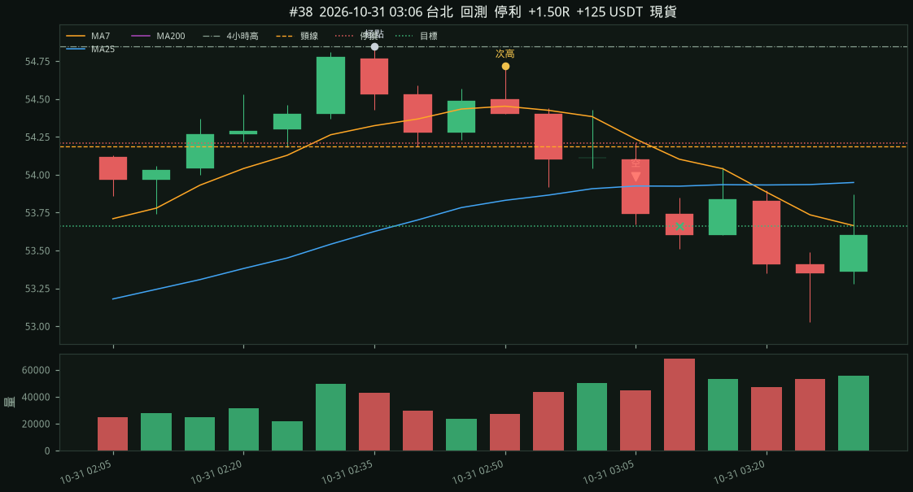
進場 51.5100 停損 51.8200 目標 51.0450 出場 51.1800 時間到 +1.06R 極點 52.0400 頸線 51.5700 較低高點 51.8200 四小時高點 51.9200 張數 322 毛損益 +106.26 手續費 16.53 淨損益 +89.73 USDT
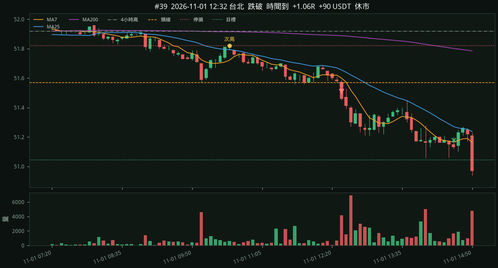
進場 50.8100 停損 51.3200 目標 50.0450 出場 50.9000 時間到 -0.18R 極點 51.4500 頸線 50.9100 較低高點 51.3200 四小時高點 51.4500 張數 196 毛損益 -17.64 手續費 9.97 淨損益 -27.61 USDT
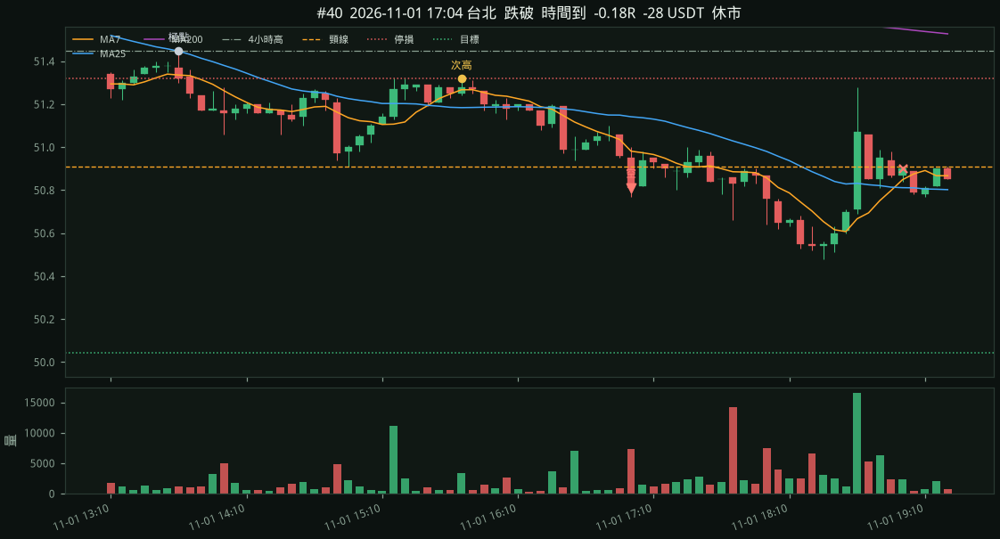
進場 50.7600 停損 50.8100 目標 50.6850 出場 50.8100 停損 -1.00R 極點 51.2800 頸線 50.7700 較低高點 51.0600 四小時高點 51.2800 張數 2000 毛損益 -100.00 手續費 101.57 淨損益 -201.57 USDT
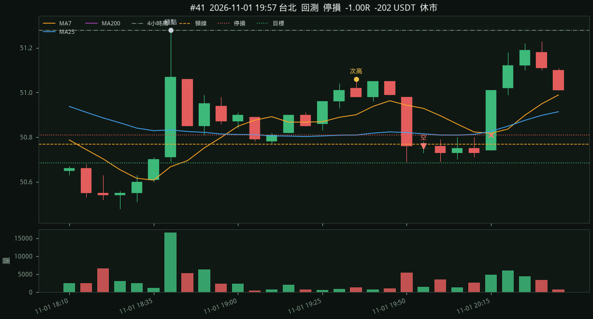